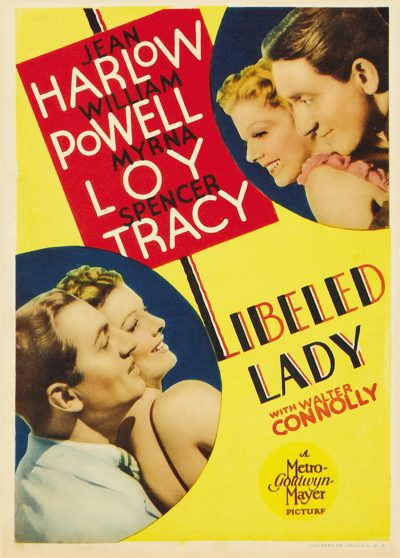

Libeled Lady

Starring: Spencer Tracy, Jean Harlow, Myrna Loy
Director: Jack Conway
Writer: Maurine Dallas Watkins, George Oppenheimer
Producer: Lawrence Weingarten
Libeled Lady is a 1936 American screwball comedy film starring Jean Harlow, William Powell, Myrna Loy, and Spencer Tracy. It was directed by Jack Conway, with a screenplay by Maurine Dallas Watkins, Howard Emmett Rogers, and George Oppenheimer, from a story by Wallace Sullivan. This was the fifth of fourteen films in which Powell and Loy were teamed, inspired by their success in the Thin Man series.
Trivia
- Nominated for: Academy Award for Best Picture.
- Lionel Barrymore was originally cast as Mr. Allenbury, and Rosalind Russell was originally considered to play Connie Allenbury.
- Harlow and Powell were an off-screen couple, and Harlow wanted to play Connie Allenbury, so that her character and Powell's wound up together.
- MGM insisted, however, that the film be another William Powell-Myrna Loy vehicle, as they originally intended.
Filming Locations
- The film went into production in mid-July 1936 and wrapped on September 1. Location shooting took place in Sonora, California.
Previous Showings
4 Runs • 1 Festival
Original Billings: 1 run (November 22, 1936)
Original Run: November 22, 1936 (Sunday - Thursday)
All runs on record (4):
- November 22, 1936 (Sunday - Thursday)William Powell, Myrna Loy, Jean Harlow, Spencer Tracy
- June 1 - 3, 1991w/ Stage Door
- July 17 - 19, 1992w/ Manhattan Melodrama
- June 2 - 4, 2010Spring 2010w/ After the Thin Man